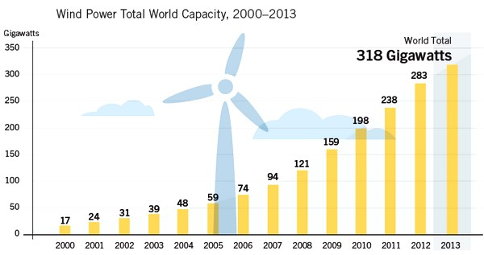

Présentation
L’énergie éolienne est une forme d’énergie provenant indirectement de l’énergie solaire :
En effet les rayons solaires absorbés dans l’atmosphère entraînent des différences de température et de pression. Les masses d’air se mettent donc en mouvement et accumulent de l’énergie cinétique.
Cette énergie peut être utilisée pour la transformation en énergie mécanique, pour faire avancer un bateau à voile par exemple.
Mais elle peut également produire de l’énergie électrique lorsqu’on la couple à un générateur électrique pour fabriquer du courant.
Cette énergie peut soit servir à alimenter un système autonome, qui possède un dispositif de stockage d’énergie,
soit être alimenté au réseau électrique afin de revendre cette énergie.
Les pales permettent de transformer l’énergie cinétique du vent en énergie mécanique (le mouvement mécanique des pâles). Le vent fait tourner les pales entre 10 et 25 tours par minute. La vitesse de rotation des pales dépend de la taille de celles-ci. Plus les pales seront grandes, moins elles tourneront rapidement.
Les éoliennes forment une part importante de la production totale d'électricité dans le monde.
Production électrique mondiale des éoliennes (2000-2013)
Cette production ne cesse d'augmenter: On multiplie par plus de 15, la hausse de production électrique entre 2000 et 2013, cette évolution en à peine 13ans n'est pas des moindres, mais qu'en sera-t-il dans 100ans ?
Fonctionnement simplifié d'une éolienne
Sous l'effet du vent, l'hélice, appelée aussi rotor, se met en marche. Ses pales tournent. Le rotor est situé au bout d'un mât car les vents soufflent plus fort en hauteur. Suivant le type d'éoliennes, le mât varie entre 10 et 100 m de haut. Le rotor comporte généralement 3 pales, mesurant entre 5 et 90 m de diamètre.
On distingue deux typologies d'installations:
- Industrielles : les grands parcs éoliens (ou « fermes éoliennes ») raccordés au réseau électrique
- Domestiques : des petites éoliennes installées chez les particuliers.